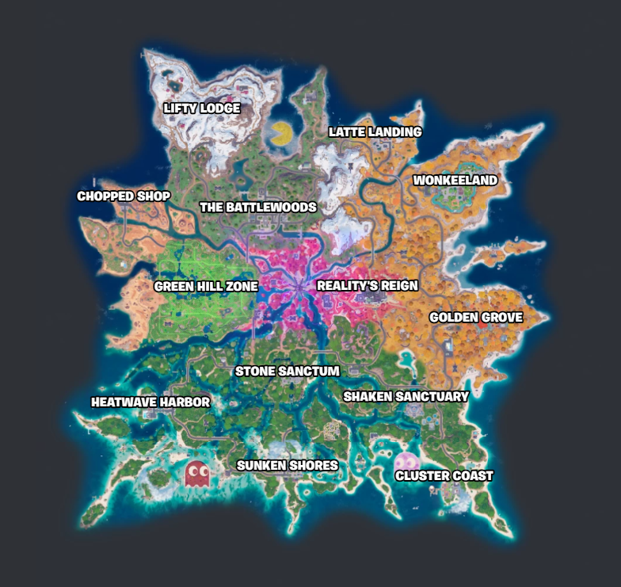

O mapa
O mapa é uma das principais partes das partidas de Fortnite. Os jogadores podem escolher diferentes locais para pousar e encontrar equipamentos.

Locais de interesse
- Cidades
- Florestas
- Montanhas
- Praias
- Áreas especiais
O mapa é uma das principais partes das partidas de Fortnite. Os jogadores podem escolher diferentes locais para pousar e encontrar equipamentos.
